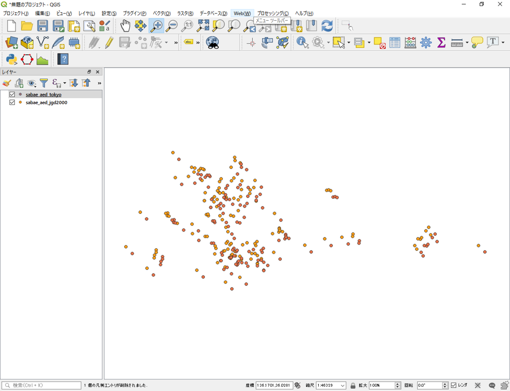
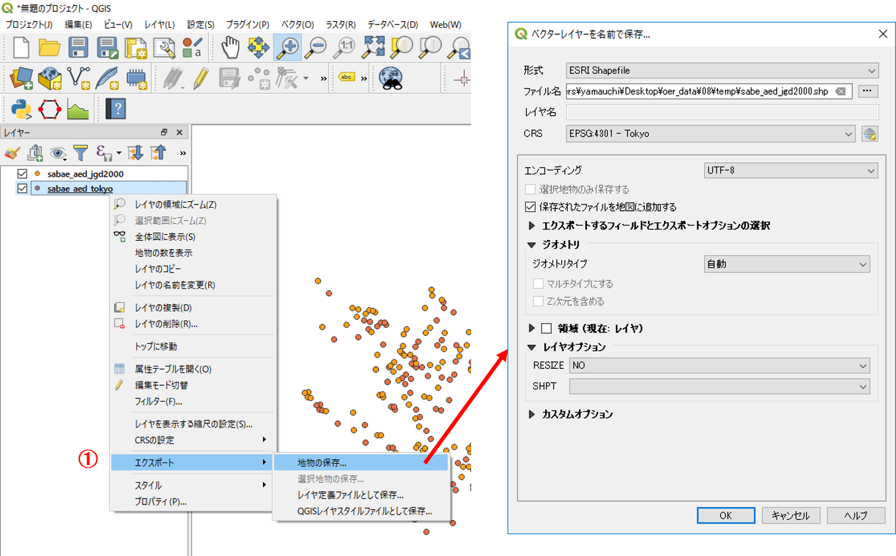
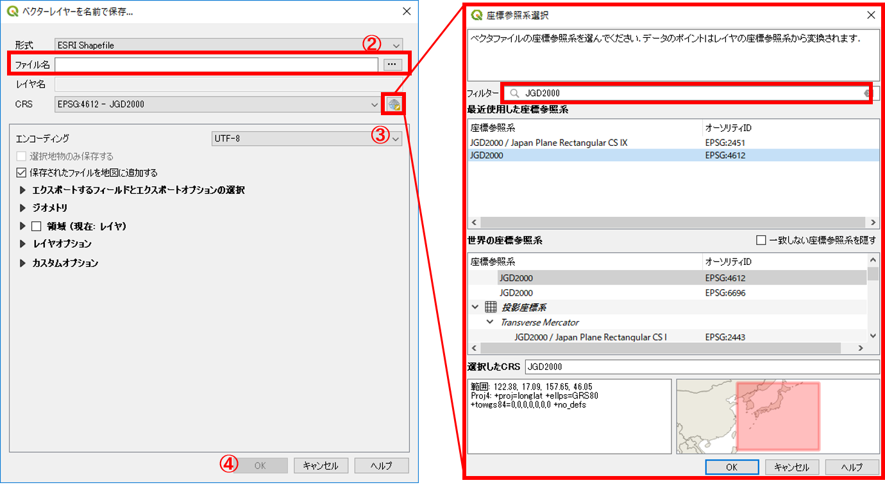

空間データ
本教材は、「空間データ」の実習用教材です。GISソフトウェア（QGIS）を用いて、空間座標の変換、ジオリファレンス、ジオコーディングについて解説しています。講義用教材として、地理情報科学教育用スライド（GIScスライド）の3章が参考になります。
Menu
以下は解説を省略したため、関心のある方は、GIS実習オープン教材を参照してください。
実習用データ
実習をはじめる前に、Sabaeをダウンロードしてください。
空間座標の変換
地理空間情報（GISで扱うことのできるデータ）は、測地系と座標系に基づいた位置情報を保持しています。測地系や座標系は様々なものがあります。そのため、複数のデータを処理する場合は、各データの座標系を統一する必要があります。その際に、空間座標の変換を行います。以下では、QGISを用いた変換手法を解説しています。空間座標系についての解説は、地理情報科学教育用スライド（GIScスライド）の3章やGISの基本概念の教材を参照してください。また、この実習を始める前に、以下の座標変換の正誤事例を参照し、今後の作業で誤った座標変換を行わないように注意してください。
※以下の教材で使用しているQGIS3.4では、JGD2011の変換のエラーがあるため、JGD2011のデータに対してJGD2000を割り当てている点に注意してください。
測地系変換
Sabaeをダウンロードし、以下の手順に従って、sabae_aed_tokyo（日本測地系 緯度経度）とsabae_aed_jgd2000（世界測地系 緯度経度）のシェープファイルをQGISに読み込む。

- データソースマネージャを開く。
- エンコーディングをUTF-8に設定し、ソースから、ダウンロードした日本測地系と世界測地系のshape（sabae_aed_jgd2000とsabae_aed_tokyo）を指定する。
- 「追加」 をクリックする。
この際に、QGISが自動で、擬似的な位置あわせをしてしまうため、オンザフライ投影の機能をオフにする。

- 右下のEPSGのボタンをクリックする。
- 投影なしにチェックをつけ、オンザフライ投影を無効にする。
以下のように、データは同じ場所のものにもかかわらず、座標系が異なるためずれて表示されることを確認する。 
それぞれのレイヤの上で右クリックして、プロパティ（ソースのタブ）から座標系を確認する。

以下の手順で、日本測地系を世界測地系へ変換する。 
- プロパティ＞エクスポート＞地物の保存をクリックする 。
 2. 新規レイヤの出力先と名前を選択する。 3. CRSを選択するために、図中の③をクリックし、フィルターからJGD2000を検索し、OKをクリックする。 4. OKをクリックする。
以下のように、測地系がJGD2000に変換された。

投影変換
以下では、地理座標系のデータを投影座標系の平面直角座標系へ変換する手法について解説する。世界測地系緯度経度のデータを用いて、以下の処理を行う。

- プロパティ＞エクスポート＞地物の保存をクリックする。
- 新規レイヤの出力先と名前を選択する。
- CRSのボタンをクリックし、変更したいCRSを選択（JGD2000 / Japan Plane Rectangular CS Ⅵ）してOKをクリックする。
- OKをクリックする。
以下のように、座標系が（JGD2000 / Japan Plane Rectangular CS Ⅵ）に変換された。座標系が変換したため、レイヤが重なって表示されないことを確認する。

※世界測地系の平面直角座標系へ変換する場合に、地域によって○○系と指定する必要がある。詳しくは、国土地理院の平面直角座標系の対応表を参考にする。
※空間座標の変換のよくある間違いとして、新規にデータを作成せず、プロパティ（一般情報）の空間参照システムからCRSを選択する等があるため、今後同様の処理を実行するときに注意する。
この教材の課題ページ_空間データへ進む
ライセンスに関する注意事項
本教材で利用しているキャプチャ画像の出典やクレジットについては、その他のライセンスについてよりご確認ください。